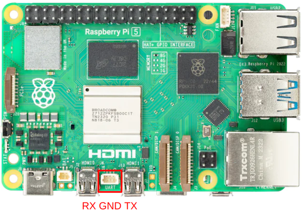
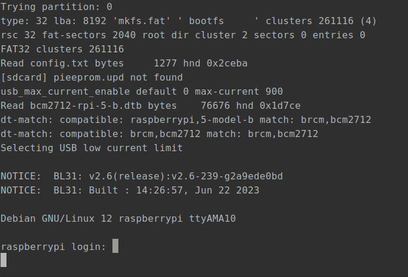
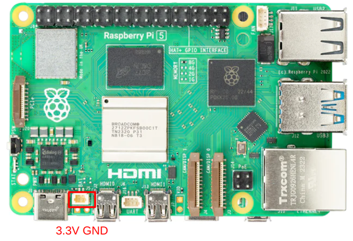

RaspberryPi 5のセットアップ
はじめに
RaspberryPi5（RPi5）がついに日本でも発売されましたね！ バッテリーでバックアップ可能なRealTimeClock(RTC)やUART用コネクタ、独自開発のI/Oチップ “RP1” 等の採用等、RPi5にはRPi4にはない特徴がいくつかあります。この記事では、RPi5のセットアップを行いながらこれらの新機能を試してみたいと思います。
動作環境
OS
RaspberryPiOS Lite (64bit) Debian bookworm
初回起動時にユーザー名とパスワードを入力
raspi-configでシリアル通信を有効化
作業に使ったノートPC
Regolith Linux (Ubuntu 21.10)
UART
従来のラズパイでもGPIO上に割り当てられたUARTピンを使ったシリアル通信は可能でしたが、RPi5ではGPIOから独立したUARTコネクタが用意されています。
（参考：公式ドキュメント）
ドキュメントには公式のデバッグプローブの使用例が掲載されていますが、
当然3.3V系のUSBシリアル変換モジュールであれば何でも使うことができます。今回は秋月電子通商のFT234X 超小型USBシリアル変換モジュールを使ってみました。
ピンアウトは下図のようになっており、3ピンのJST-SHコネクタ（1.0 mmピッチ）を使って接続できます。SHコネクタの圧着は圧着工具がないとできないため、
千石電商等でケーブル付きのものを買うと便利です。

ノートPCとUSBシリアル変換モジュール、ラズパイのUARTコネクタを接続し、ノートPC上でminicom -D /dev/ttyUSB0を実行するとラズパイのシリアルコンソールにアクセスすることができます。デフォルトのボーレートは115200です。

PCからラズパイへのアクセスにはSSHを使うことのほうが多い印象ですが、 ネットワーク設定の要らないUART接続も気軽で便利です。 また、ラズパイが突然起動しなくなり、SSHもできないときにブート時の出力を見ることができる、というメリットもあります。
Real Time Clock (RTC)
RPi5 は内蔵のリアルタイムクロック(RTC)を搭載しています。 RPi5のBATと書かれた2ピンコネクタにバッテリーを接続することで、ラズパイに電源が供給されていないときにもRTCをバックアップし、時刻保持やアラームによる起動をおこなうことができます。公式のバッテリーにはパナソニック製のML2020リチウム二次電池が使われていますが、執筆時点では入手できなかったため、代替として 秋葉原の稲電気 で購入したML2032電池を使用しました。マイコン類のRTCバックアップにはCRシリーズのようなコイン型の一次電池が使われることが多いですが、公式ドキュメントでは、RPi5のRTCは消費電力が大きいため二次電池の使用が推奨されています。
電池は2ピンのJST SHコネクターで下図のように接続します。 
今回はML2032用のバッテリーケースの3Dモデル も設計し、3Dプリンターで印刷して使いました。

ラズパイ側の設定
デフォルトではRTCバックアップバッテリーの充電は無効化されているため、有効化する必要があります。
/boot/firmware/config.txtに以下を追記し、再起動すると充電が有効化されます。
dtparam=rtc_bbat_vchg=3000000
また、シャットダウン時の待機電力を減らす省電力モードと、RTCからのwake alarmを有効化します。
sudo -E rpi-eeprom-config --edit
エディタが開かれるので、以下を書き込みます。POWER_OFF_ON_HALT にデフォルトで0が入っている場合は書き換えます。
POWER_OFF_ON_HALT=1
WAKE_ON_GPIO=0
ユースケース：間欠動作
RTCの使用例として、毎日決まった時刻に起動・シャットダウンする間欠動作を実装してみます。例えば、夜間にだけラズパイを動かしたいときに昼の間は寝かせておくことで消費電力を大幅に削減できます。
これは、「毎日決まった時刻に、アラームをかけてシャットダウンする」ことで実現可能です。以下のシェルスクリプトのように、/sys/class/rtc/rtc0/wakealarmへ次回起動する時刻（UNIX時）を投げておくと、指定の時刻にラズパイを自動起動することができます。この例では10時間半のアラームをかけてからシャットダウンしています。
date "+%s" -d "10 hours 30 minutes" > /sys/class/rtc/rtc0/wakealarm && /usr/sbin/telinit 0
ここで、このRTCアラームをcronで定時に実行すれば、間欠動作ができます。例えば下の例では、毎日6:30にアラームをかけてシャットダウンしています。この作業にはroot権限が必要なため、sudo crontab -u root -eとしてroot権限でcrontabを作成します。
30 6 * * * /bin/bash /home/pi/alarm.sh
これによって、上の例ではラズパイは毎日6:30にシャットダウンし、それから10時間半後の17:00にRTCアラームで自動起動することができます。